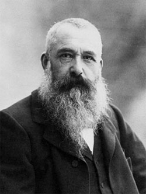

<--Back
Claude Monet

본명: 오스카 클로드 모네
출생: 1840년 11월 14일 프랑스
사망: 1926년 12월 5일 프랑스
‘인상주의’ 라는 말 자체가 모네의 그림 중,
매우 중요한, <인상, 해돋이>라는 작품에서 시작이 된다.
다른 인상파 화가들조차 빛의 변화를 포착하는 데에만 집중해서
대상 자체의 형태를 파악하기 어렵고 무게감이 떨어진다는 인상주의의
한계를 자각하고 화풍을 바꿀 때까지도 그만은 끝까지 인상주의 화풍을
고수했다. 인상주의를 시작하고 인상주의를 끝까지 지킨, 실로 인상파의
아버지라고 할 수 있는 인물. 오늘날 인상파라고 말할 때 떠올리는
작품의 대부분이 바로 그의 작품이다.
 Claude Monet
Claude Monet